Bắt đầu
Ứng dụng chạy trên trình duyệt của điện thoại (Chrome hoặc Safari). Không cần cài từ cửa hàng ứng dụng.
1Mở ứng dụng và thêm vào màn hình chính
- Mở đường dẫn ứng dụng do phòng IED gửi.
- Android (Chrome): bấm ⋮ → Thêm vào màn hình chính. iPhone (Safari): bấm Chia sẻ → Thêm vào MH chính.
- Sau lần mở đầu tiên, ứng dụng vẫn chạy khi không có mạng. Nghiên cứu được giữ trên điện thoại và tự gửi khi có mạng lại.
- Đổi ngôn ngữ ở ô VI / EN góc trên bên phải.
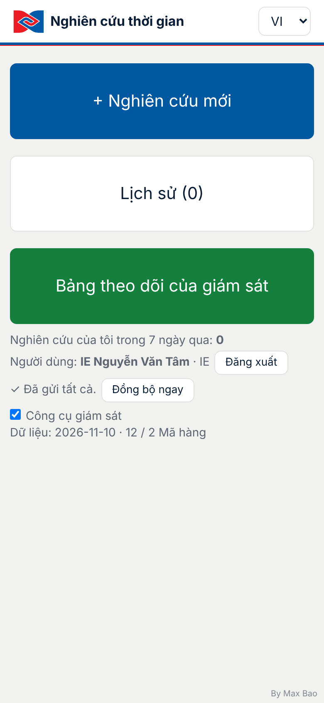
2Đăng nhập
Bấm Đăng nhập, nhập email và mã PIN do giám sát cấp. Chỉ cần đăng nhập một lần trên mỗi điện thoại.
Sau khi đăng nhập, màn hình chính có:
- + Nghiên cứu mới: bắt đầu bấm giờ một chuyền.
- Lịch sử: các nghiên cứu bạn đã lưu.
- Bảng theo dõi của giám sát: hiện với tài khoản giám sát, hoặc khi bật Công cụ giám sát.
- Dòng trạng thái gửi: ✓ Đã gửi tất cả hoặc ⏳ đang chờ gửi, và nút Đồng bộ ngay.
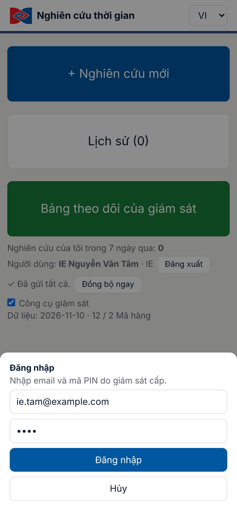
Tạo nghiên cứu mới
Bấm + Nghiên cứu mới. Màn hình có 2 phần đánh số: thiết lập, rồi chọn công nhân. Mọi thay đổi được lưu nháp tự động, tắt ứng dụng giữa chừng không mất dữ liệu.
1Thiết lập nghiên cứu
| Ô | Nhập gì |
|---|---|
| PU, Chuyền | Chọn PU trước, sau đó chọn chuyền. Danh sách công nhân của chuyền sẽ hiện ở phần 2. |
| Mã hàng | Gõ vài ký tự rồi chọn trong danh sách. Ứng dụng lấy SAM và loại máy của từng công đoạn theo mã hàng. |
| Loại nghiên cứu | Nghiên cứu mới: lần đầu trên chuyền. QCO: khi chuyển mã hàng. Nghiên cứu lại: sau khi cải tiến (xem chương 07). |
| Người làm | Tên IE. Bắt buộc để lưu. |
| Mục tiêu SL/giờ | Sản lượng mục tiêu mỗi giờ của chuyền. Nên nhập để có bảng Số lao động cần cho mục tiêu. |
| Số lao động của chuyền | Tổng số người trên chuyền. Ứng dụng cảnh báo nếu số người đã bấm giờ khác số này. |
| Số cái mặc định mỗi công nhân | Số cái cần bấm cho mỗi người (mặc định 5). Có thể đổi riêng từng người. |
| Đã thay đổi gì / nhận xét | Ghi lại tình hình chuyền hoặc thay đổi đã làm. Hiện trong báo cáo. |
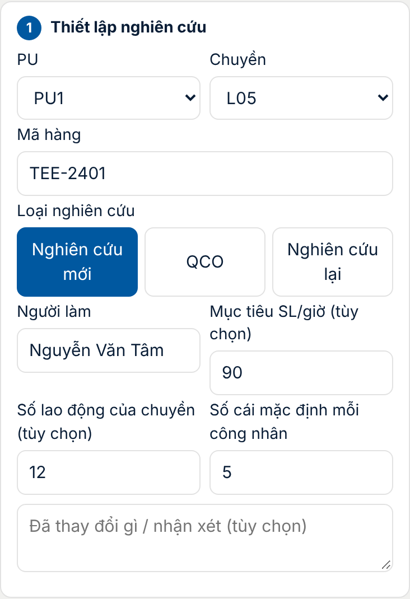
2Chọn công nhân
- Bấm vào tên công nhân để thêm vào nghiên cứu. Tìm nhanh bằng ô Tìm công nhân (tên hoặc mã).
- Công nhân mới chưa có trong dữ liệu: bấm + Thêm công nhân thủ công, nhập tên (mã không bắt buộc). Người này được đánh dấu thêm tay.
- Sau khi bấm giờ, bên cạnh tên hiện các công đoạn của người đó (dấu ✓ = đã bấm xong).
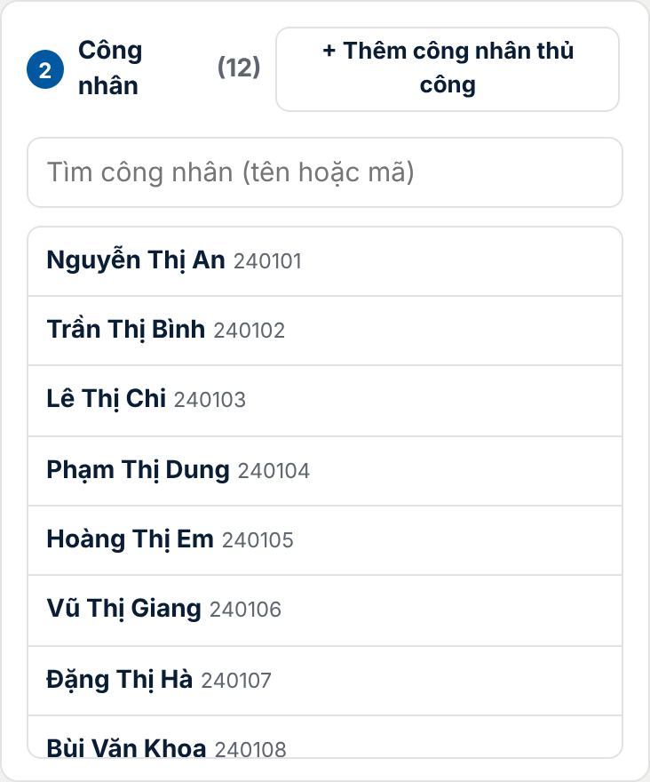
3Chọn công đoạn của công nhân
- Bấm số công đoạn (31 đến 116) mà người này đang làm. Ô bên dưới hiện SAM và loại máy để kiểm tra.
- Bấm Xác nhận công đoạn. Đồng hồ bấm giờ hiện ra.
- Công đoạn có viền xanh là đã có người được bấm giờ.
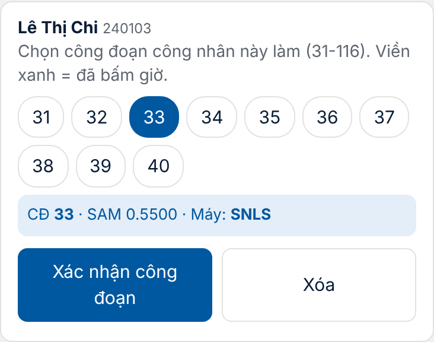
Bấm giờ
Đồng hồ hoạt động như đồng hồ bấm giờ của điện thoại. Mỗi vòng là một lần công nhân làm xong một số cái. Màn hình điện thoại được giữ sáng trong khi đồng hồ chạy.
1Bắt đầu, Vòng, Dừng
- Kiểm tra Số cái trong vòng này (thường là 1).
- Bấm Bắt đầu khi công nhân bắt đầu cầm sản phẩm.
- Bấm Vòng mỗi khi công nhân làm xong số cái của vòng. Thời gian vòng được ghi vào bảng.
- Khi đủ Số cái cần bấm, đồng hồ tự dừng và màn hình chuyển xuống công nhân kế tiếp chưa bấm xong.
- Dừng tạm ngưng khi công nhân rời chỗ (đi vệ sinh, chờ hàng). Bấm Tiếp tục để chạy lại. Vòng đang chạy được giữ nguyên.
- Xóa vòng đang chạy (khi đã dừng) bỏ phần thời gian của vòng chưa xong.
- Hoàn tác vòng cuối xóa vòng vừa ghi nếu bấm nhầm. Hai lần bấm Vòng cách nhau dưới 1,5 giây được coi là bấm nhầm và bỏ qua.
Dưới bảng vòng là kết quả của người này: TB (giây) mỗi cái, cái/giờ, Hiệu suất và Độ biến động.
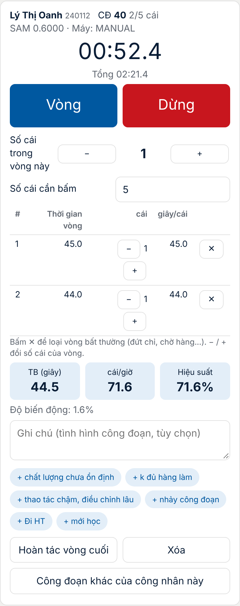
2Bấm giờ nhiều người cùng lúc
Khi đứng giữa 2 đến 4 công nhân ngồi gần nhau, có thể bấm giờ tất cả cùng lúc:
- Bấm Bắt đầu trên thẻ của từng người. Bắt đầu người sau không dừng người trước.
- Thanh Đang bấm giờ ở cuối màn hình hiện mỗi người một dòng: tên, công đoạn, số cái đã bấm, thời gian vòng đang chạy.
- Bấm nút Vòng trên dòng của người vừa làm xong. Không cần cuộn lên tìm thẻ.
- Bấm nút tạm dừng (hai vạch) khi người đó chờ hàng. Dòng chuyển màu vàng đang chờ với nút Tiếp tục.
- Bấm vào tên trên dòng để mở thẻ của người đó (đổi số cái trong vòng, loại vòng, ghi chú).
- Bấm vào tiêu đề Đang bấm giờ để thu gọn thanh thành một dòng khi cần xem nội dung phía sau. Bấm lần nữa để mở lại.
- Khi đủ số cái cần bấm, người đó tự rời khỏi thanh.
- Nếu điện thoại tắt trình duyệt hoặc tải lại trang, các đồng hồ vẫn tiếp tục chạy và ứng dụng mở lại đúng màn hình bấm giờ.
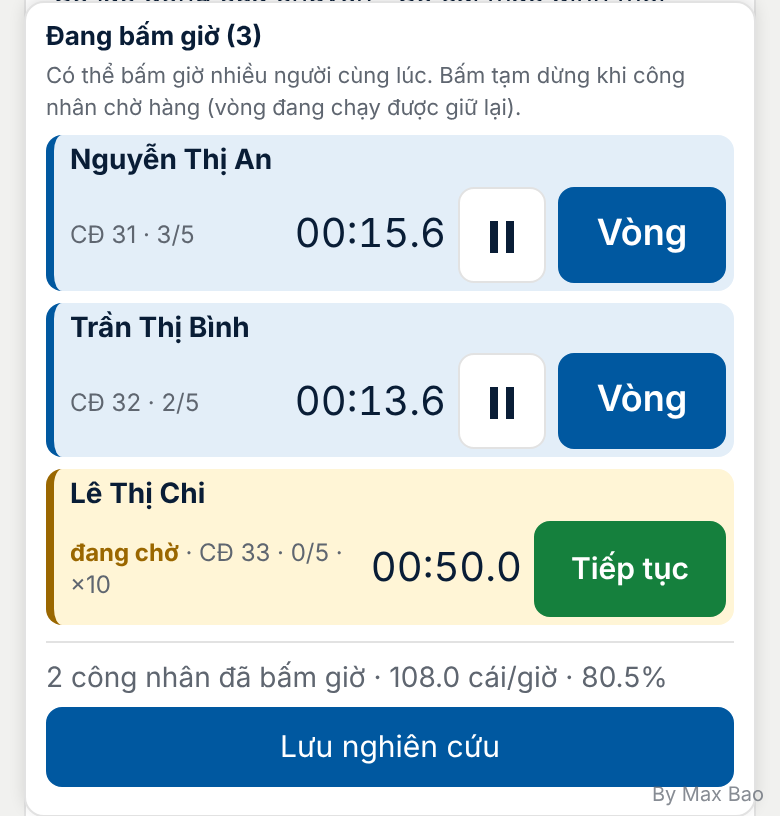
3Ghi chú tình hình công đoạn
Ghi vào ô Ghi chú hoặc bấm các ghi chú nhanh:
- chất lượng chưa ổn định, k đủ hàng làm, thao tác chậm, điều chỉnh lâu
- nhảy công đoạn, Đi HT, mới học
Ghi chú hiện trong kết quả, báo cáo Excel và trong từng nghiên cứu trên bảng theo dõi của giám sát.
Tình huống thường gặp trên chuyền
Bấm đúng cách cho từng tình huống để năng lực chuyền phản ánh đúng thực tế.
AMay dây chuyền (may liền nhiều cái rồi cắt)
Ví dụ: lên lai tay áo máy viền, công nhân may liền 10 cái, sau đó cắt rời và cắt chỉ.
- Trước khi bấm Vòng, đặt Số cái trong vòng này = 10 bằng nút +.
- Bấm Vòng sau khi công nhân cắt rời và cắt chỉ xong, để thời gian cắt cũng được tính.
- Ứng dụng tự chia: 230 giây ÷ 10 cái = 23 giây/cái.
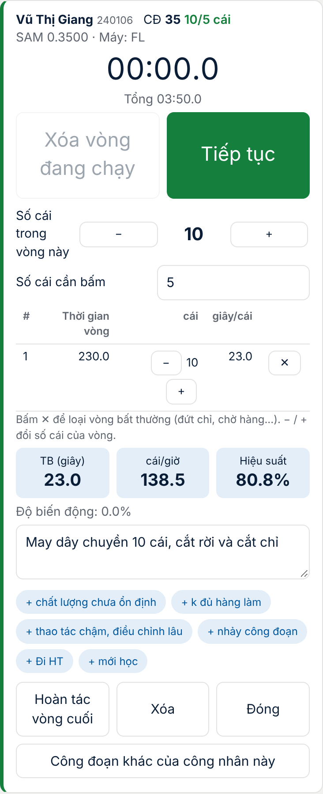
BVòng bất thường: đứt chỉ, chờ hàng, sửa hàng lỗi
- Bấm ✕ ở cuối dòng để loại vòng đó. Dòng bị gạch và không được tính. Bấm ↺ để lấy lại.
- Ví dụ: công nhân mới phải tháo ra may lại 2 cái (140 và 150 giây). Hai vòng này được loại.
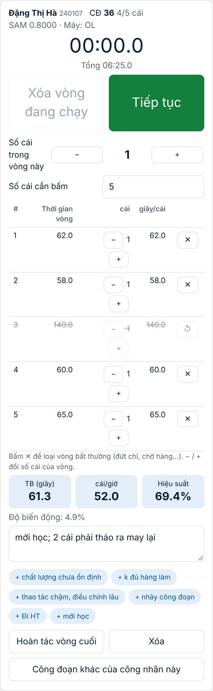
CMột người làm nhiều công đoạn riêng
Ví dụ: Lê Thị Chi may diễu cổ sau (CĐ 33) và may nhãn (CĐ 38) cho mọi sản phẩm, làm theo từng bó.
- Bấm giờ CĐ 33 như bình thường.
- Bấm Công đoạn khác của công nhân này, chọn CĐ 38 và bấm giờ tiếp.
Ứng dụng biết đây là cùng một người và chia thời gian của người đó cho hai công đoạn: mỗi sản phẩm cần 35,2 + 16,4 giây, nên người này chỉ làm được khoảng 62 cái/giờ cho cả hai công đoạn, không phải 90 và 194.
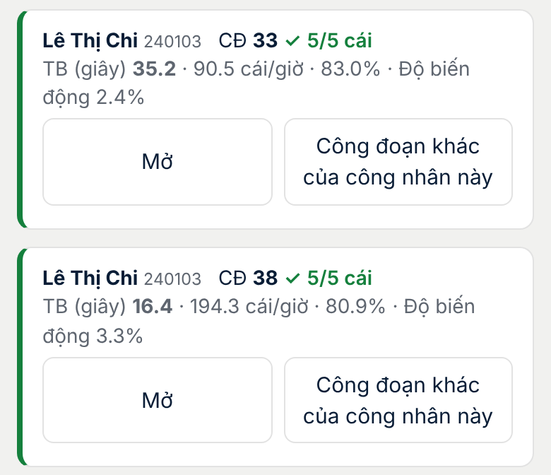
DMột công đoạn gồm nhiều chi tiết, công nhân phải chờ chi tiết
Ví dụ: Chi may CĐ 33 cho thân trước và thân sau. Chi may xong bó 10 thân trước, rồi phải chờ bó thân sau.
- Đặt Số cái trong vòng này = 10 (10 sản phẩm), bấm Bắt đầu.
- Chi may xong 10 thân trước và bắt đầu chờ: bấm tạm dừng. Vòng đang chạy được giữ lại, Chi hiện đang chờ trên thanh Đang bấm giờ.
- Trong lúc chờ, đi bấm giờ những công nhân khác.
- Khi bó thân sau đến, quay lại bấm Tiếp tục trên dòng của Chi.
- Chi may xong 10 thân sau: bấm Vòng. Vòng này là thời gian làm 10 bộ đầy đủ, không tính thời gian chờ.
Đọc kết quả
Kết quả hiện ngay bên dưới các công nhân và cập nhật sau mỗi vòng. Không cần bấm nút phân tích.
1Chất lượng nghiên cứu
Cho biết nghiên cứu có đủ tin cậy để ra quyết định hay chưa:
| Mức | Khi nào |
|---|---|
| Đạt | Mọi công nhân đã bấm ít nhất 3 cái, đủ công đoạn, thời gian ổn định. |
| Cần kiểm tra | Có công nhân biến động trên 15%, hoặc còn vài công đoạn chưa bấm giờ. |
| Cần xem lại | Có công nhân bấm ít hơn 3 cái, hoặc dưới 80% công đoạn được bấm giờ. |
2Các chỉ số chính
- Năng lực chuyền (cái/giờ): năng lực của công đoạn chậm nhất. Bên cạnh là mục tiêu (ví dụ 61,7 / 90).
- Hiệu suất chuyền: tổng SAM ÷ tổng thời gian thực tế của mọi công nhân.
- Tỷ lệ cân bằng: công đoạn chậm nhất so với trung bình các công đoạn. Càng gần 100% chuyền càng cân bằng.
- Công đoạn nút cổ chai: công đoạn quyết định năng lực chuyền và người đang làm.
- Số người đã bấm giờ so với số lao động của chuyền. Có cảnh báo nếu còn người chưa bấm.
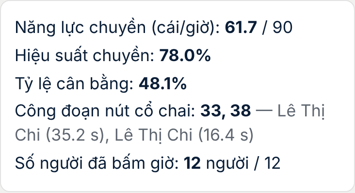
3Biểu đồ cân bằng chuyền
Mỗi cột là năng lực một công đoạn (cái/giờ). Cột đỏ là nút cổ chai. Đường đỏ gạch là năng lực chuyền, đường xanh lá là mục tiêu. Cột thấp hơn đường xanh lá là công đoạn chưa đạt mục tiêu.
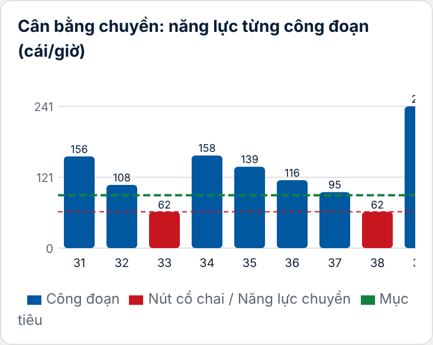
4Số lao động cần cho mục tiêu
Bảng quan trọng nhất để quyết định điều chuyển. Mỗi dòng là một công đoạn, sắp xếp từ thiếu nhiều nhất:
- Có: số lao động đang làm công đoạn (người làm nhiều công đoạn được tính theo phần thời gian, ví dụ 0,7).
- Cần: số lao động cần để đạt mục tiêu.
- Chênh lệch = Có − Cần. Âm (đỏ, thiếu) là công đoạn không đạt mục tiêu. Dương (xanh, dư) là công đoạn còn thời gian rảnh.
Phía trên bảng, ứng dụng ghi việc cần làm:
- Một người làm nhiều công đoạn đang thiếu → giao một công đoạn cho người khác.
- Có công đoạn dư cùng loại máy → chuyển phần thời gian dư sang công đoạn thiếu.
- Không có công đoạn dư cùng loại máy → thêm hoặc đào tạo người, hoặc cải tiến thao tác.
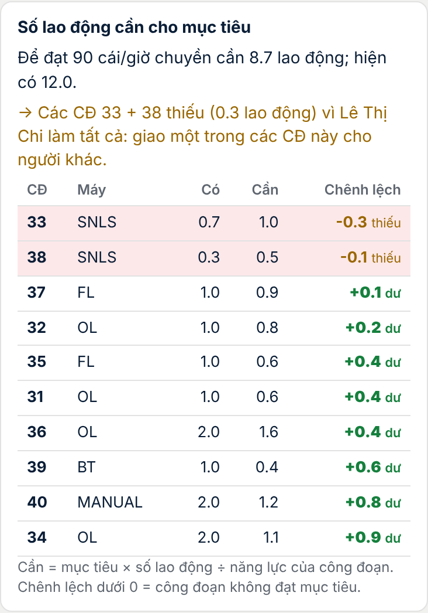
5Bảng công nhân và đề xuất điều chuyển
- Mỗi dòng: thời gian trung bình mỗi cái, cái/giờ, hiệu suất (%), kèm ghi chú.
- Dấu * ở cột cái/giờ: người này chia thời gian cho nhiều công đoạn. Con số là sản lượng thật người đó làm ra cho chuyền.
- Đề xuất điều chuyển (cuối trang): ứng dụng thử chuyển từng người sang công đoạn khác dùng cùng loại máy và chỉ đề xuất khi năng lực chuyền tăng.
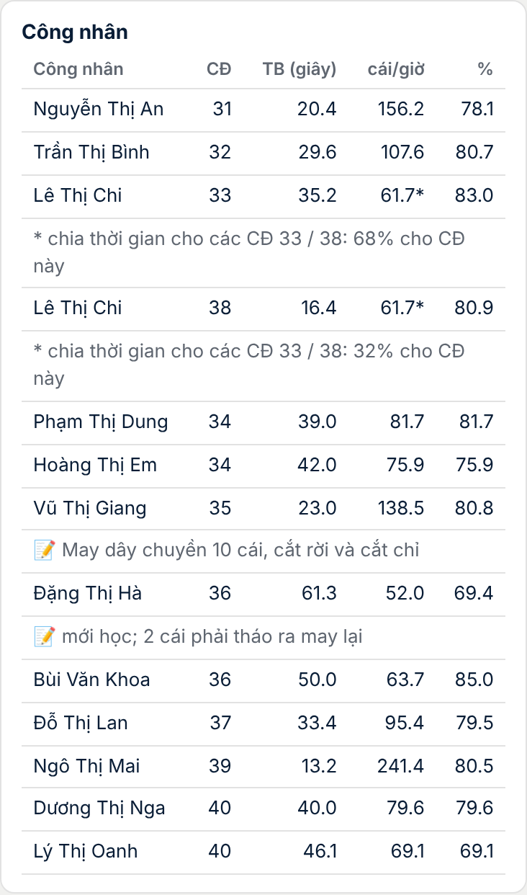
Lưu, gửi và xuất Excel
Thanh dưới cùng màn hình luôn cho biết số người đã bấm giờ, năng lực và hiệu suất, cùng nút lưu.
1Lưu nghiên cứu
- Bấm Lưu nghiên cứu. Nút chỉ bấm được khi đã chọn chuyền, mã hàng, nhập Người làm và có ít nhất một công nhân được bấm giờ.
- Nghiên cứu được gửi lên máy chủ. Không có mạng thì hiện ⏳ đang chờ gửi và tự gửi sau, hoặc bấm Đồng bộ ngay.
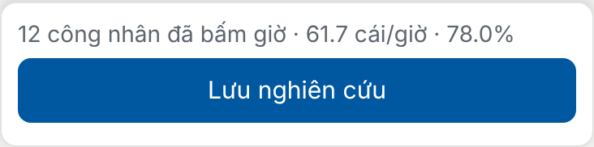
2Lưu khi còn vòng chưa xong
Nếu bấm Lưu nghiên cứu khi còn công nhân đang giữa vòng (đang chạy hoặc đang chờ), ứng dụng hiện bảng Vòng chưa xong với tên và thời gian của từng người. Thời gian này chưa được tính vì chưa biết số cái.
- Quay lại bấm giờ: bấm Vòng khi công nhân làm xong, rồi lưu.
- Lưu, giữ vòng chưa xong: lưu các vòng đã xong. Vòng chưa xong được giữ trên điện thoại này, và trang chi tiết ghi rõ ai còn vòng chưa xong.
- Để bấm tiếp: mở nghiên cứu → Sửa / Tiếp tục nghiên cứu. Những người đó hiện lại đang chờ với đúng thời gian. Bấm Tiếp tục, rồi Vòng khi xong.
- Nếu chưa ai có vòng nào xong, bảng chỉ nhắc bấm Vòng trước, chưa lưu được.
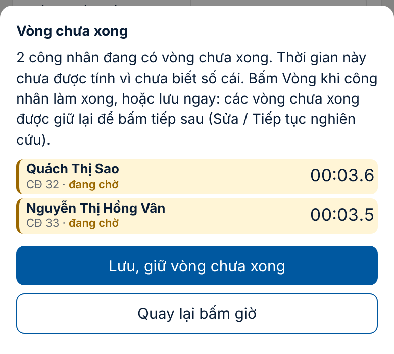
3Chi tiết nghiên cứu
Sau khi lưu, màn hình chi tiết mở ra:
- Sửa / Tiếp tục nghiên cứu: bấm thêm công nhân hoặc sửa vòng. Lưu lại sẽ cập nhật cùng nghiên cứu, không tạo bản mới.
- Gửi báo cáo về email: gửi file Excel đến email của bạn.
- Xuất báo cáo Excel: tải file Excel về hoặc chia sẻ qua Zalo, email.
Tất cả nghiên cứu đã lưu nằm trong Lịch sử trên màn hình chính.
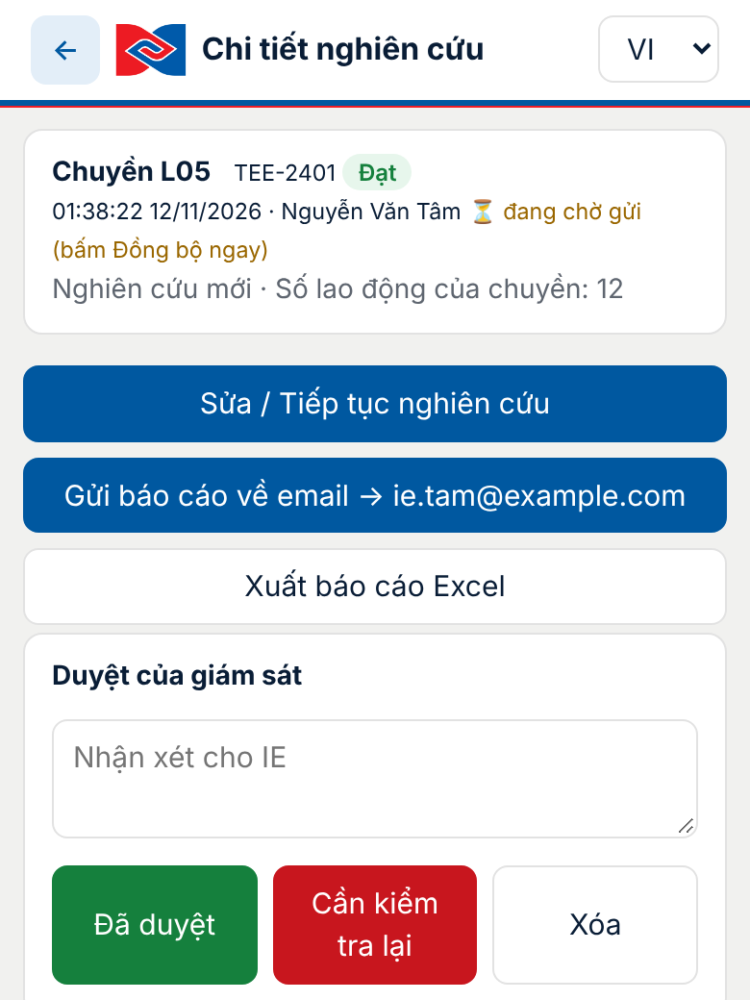
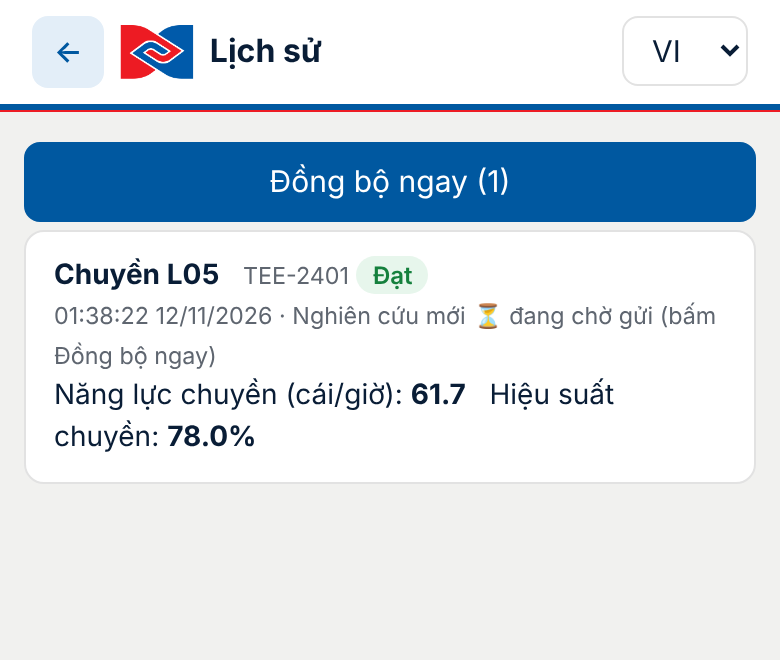
4Báo cáo Excel
File Excel có 2 trang:
- Trang mang tên chuyền (ví dụ L05): biểu mẫu nghiên cứu năng lực chuyền của công ty (P-IED-001-F008), xếp theo thứ tự công đoạn. Công đoạn ghép (ví dụ 33+34) nằm ngay sau các công đoạn của nó. Biểu đồ cân bằng chuyền ở dưới dòng Total, in trên cùng một trang A4.
- Analysis: các chỉ số, bảng năng lực từng công đoạn, biểu đồ, đề xuất điều chuyển và bảng Số lao động cần cho mục tiêu. Cột Cần và Chênh lệch là công thức Excel: đổi mục tiêu ở ô B9 thì bảng tự tính lại.
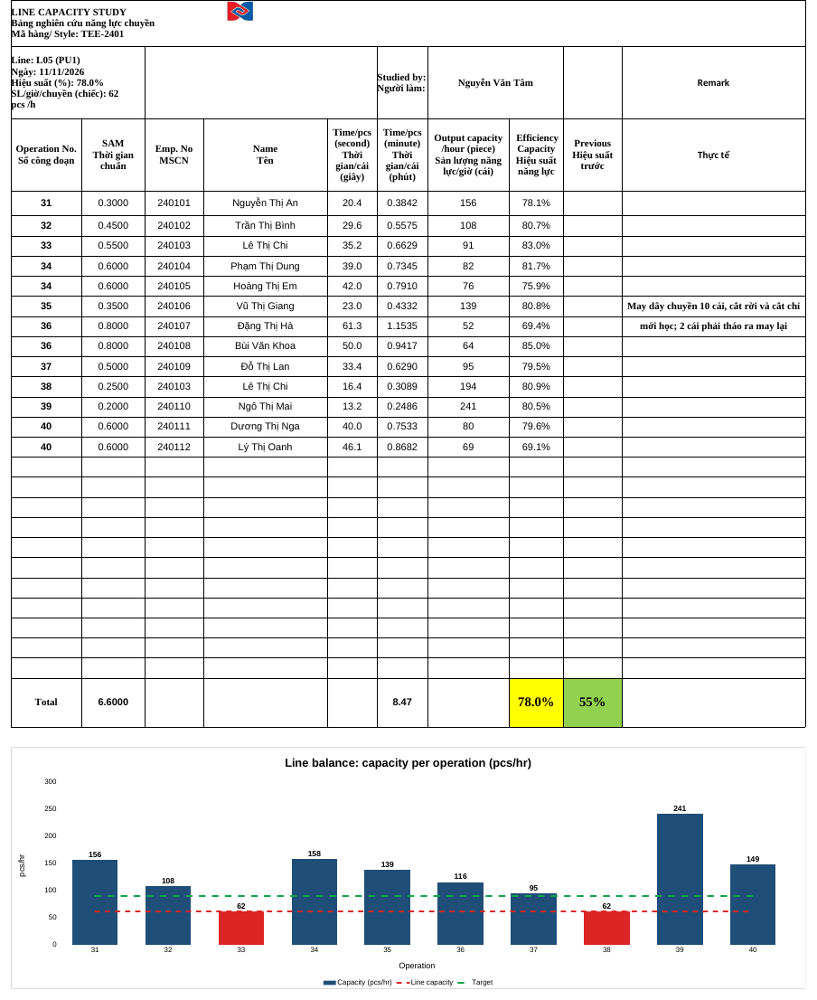
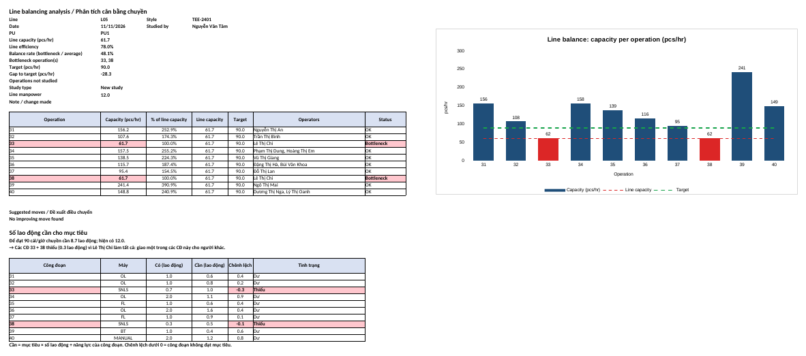
Nghiên cứu lại sau cải tiến
Dùng sau khi đã điều chuyển, đào tạo hoặc cải tiến thao tác, để đo kết quả so với lần trước. Không cần bấm lại cả chuyền.
1Chọn nghiên cứu trước
- Chọn PU, chuyền, rồi chọn loại Nghiên cứu lại.
- Ở ô Nghiên cứu trước để làm lại, chọn lần nghiên cứu cần so sánh. Mã hàng, mục tiêu và lao động được lấy từ lần đó.
- Ghi việc đã thay đổi vào ô Đã thay đổi gì / nhận xét, ví dụ “Chuyển CĐ 38 cho Oanh; Hà đã được đào tạo”.
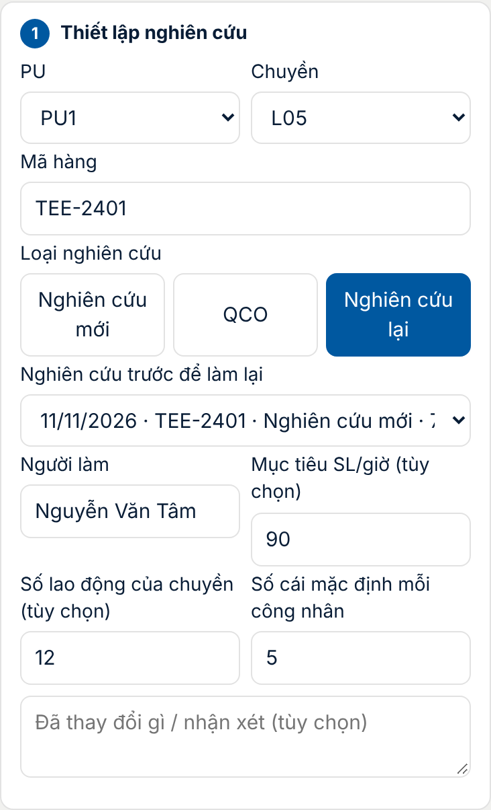
2Bấm lại những người đã thay đổi
- Mọi công nhân của lần trước hiện với nhãn từ nghiên cứu trước và thời gian cũ.
- Bấm Bấm lại cho người có thay đổi. Thời gian cũ hiện làm mốc so sánh.
- Người không còn làm công đoạn đó: bấm Xóa. Người mới: chọn trong danh sách công nhân.
Kết quả trước → sau hiện trong bảng theo dõi của giám sát (chương 08).
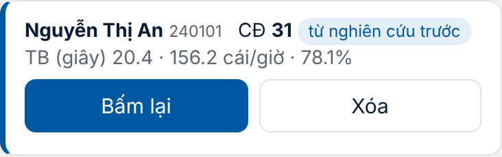
Bảng theo dõi của giám sát
Giám sát thấy nghiên cứu của mọi IE. Mở từ nút Bảng theo dõi của giám sát trên màn hình chính, rồi bấm Làm mới nghiên cứu để tải bản mới nhất.
1Bộ lọc và tìm mã hàng
- Lọc theo thời gian, PU, chuyền, IE và loại nghiên cứu. Chọn Hôm nay để xem các nghiên cứu làm hoặc sửa trong ngày.
- Bảng Các nghiên cứu trong kỳ xếp theo lần cập nhật mới nhất ở trên, cột Cập nhật cho biết giờ sửa gần nhất.
- Tìm mã hàng: gõ một phần mã hàng (không phân biệt hoa thường), ví dụ TEE. Mọi phần của bảng và báo cáo tổng hợp chỉ tính các mã hàng khớp.
- Hiệu suất chuẩn % và Tỷ lệ cân bằng tối thiểu % là tiêu chuẩn để xếp màu cho từng chuyền.
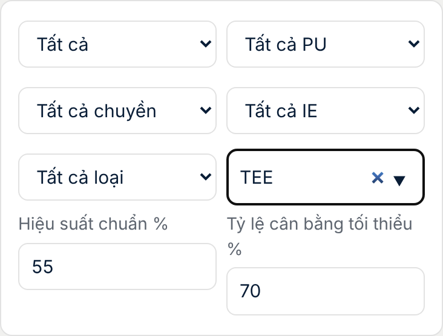
2Chỉ số tổng và màu trạng thái
| Màu | Ý nghĩa |
|---|---|
| Đạt | Hiệu suất bằng hoặc cao hơn chuẩn, năng lực đạt mục tiêu. |
| Theo dõi | Hiệu suất thấp hơn chuẩn không quá 10 điểm, năng lực đạt 90 đến 100% mục tiêu, hoặc tỷ lệ cân bằng dưới mức tối thiểu. |
| Chưa đạt | Hiệu suất thấp hơn chuẩn trên 10 điểm, hoặc năng lực dưới 90% mục tiêu. |
Ô Có thể tăng nhờ cân bằng cho biết năng lực có thể tăng bao nhiêu nếu làm theo đề xuất điều chuyển.
Hiệu suất TB theo khách hàng: khách hàng lấy từ mã hàng. Mã bắt đầu bằng SP là LLM; các mã khác bắt đầu bằng F hoặc S là ADI; còn lại là 3 ký tự đầu (ví dụ PUM25-00054 → PUM). Mỗi mã hàng trên mỗi chuyền chỉ tính lần nghiên cứu mới nhất. Cột màu xanh lá là đạt hiệu suất chuẩn.
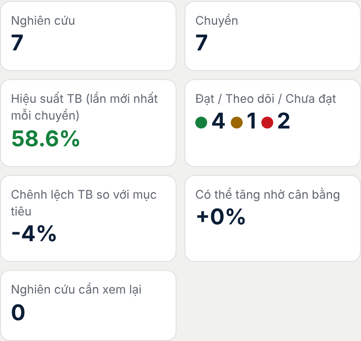
3Bảng chuyền và kết quả nghiên cứu lại
Bảng Nghiên cứu mới nhất của từng chuyền xếp theo tên chuyền (L2 trước L10), có năng lực so với mục tiêu, tỷ lệ cân bằng, nút cổ chai và chất lượng nghiên cứu. Bảng Kết quả nghiên cứu lại so sánh trước → sau: thay đổi hiệu suất (điểm %) và năng lực (%). Trên điện thoại, kéo ngang để xem hết cột.
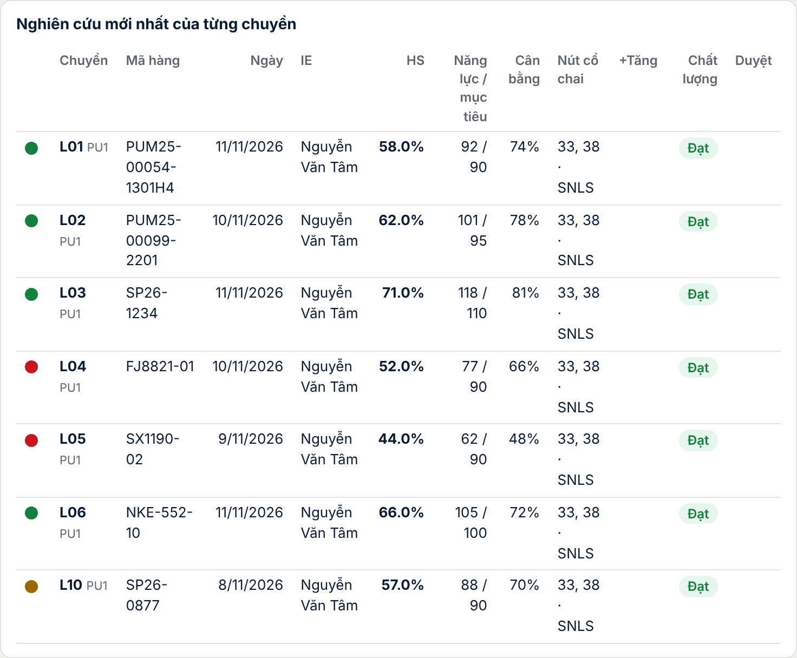
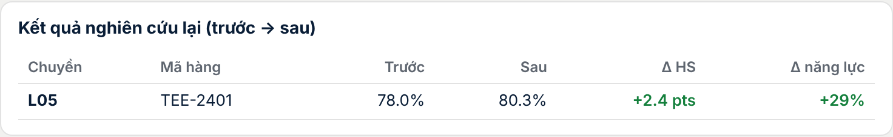
4Duyệt nghiên cứu và báo cáo tổng hợp
- Mở một nghiên cứu, ở phần Duyệt của giám sát ghi nhận xét cho IE và bấm Đã duyệt hoặc Cần kiểm tra lại. IE thấy kết quả duyệt và nhận xét trong nghiên cứu của mình sau khi điện thoại đồng bộ.
- Cuối bảng theo dõi: Xuất báo cáo tổng hợp (Excel) hoặc Sao chép nội dung tóm tắt để dán vào tin nhắn.
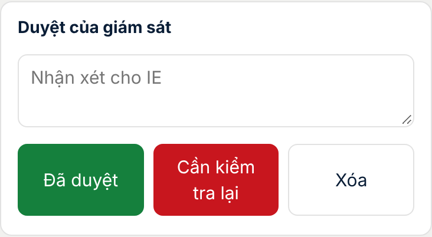
Cách tính
Các công thức ứng dụng dùng, để IE kiểm tra lại bằng tay khi cần.
| Chỉ số | Công thức | Ghi chú |
|---|---|---|
| Thời gian TB mỗi cái | Σ thời gian vòng ÷ Σ số cái | Chỉ tính các vòng không bị loại. |
| Phút/cái (có hao phí) | giây TB ÷ 60 × (1 + 13%) | Hao phí mặc định 13%. |
| Năng lực công nhân | 60 ÷ phút/cái | cái/giờ |
| Hiệu suất công nhân | SAM ÷ phút/cái | Công đoạn ghép: cộng SAM. |
| Người làm nhiều CĐ riêng | 60 ÷ Σ phút/cái các CĐ | Góp cho mỗi công đoạn của người đó. |
| Năng lực công đoạn | Σ năng lực những người làm CĐ | |
| Năng lực chuyền | min (năng lực công đoạn) | Công đoạn đó là nút cổ chai. |
| Hiệu suất chuyền | Σ SAM ÷ Σ phút/cái | Mọi công nhân đã bấm giờ. |
| Tỷ lệ cân bằng | năng lực chuyền ÷ TB năng lực công đoạn | |
| Lao động cần | mục tiêu × Có ÷ năng lực công đoạn | Chênh lệch = Có − Cần. |
| Độ biến động | độ lệch chuẩn ÷ trung bình | Cảnh báo khi trên 15%. |
Hỏi đáp
Ứng dụng có bản mới nhưng điện thoại vẫn hiện bản cũ?
Khi có mạng, chỉ cần tải lại trang. Nếu vẫn thấy bản cũ, đóng hẳn ứng dụng (vuốt tắt) rồi mở lại một lần.
Không có mạng trên chuyền thì sao?
Vẫn bấm giờ và lưu bình thường. Nghiên cứu hiện ⏳ đang chờ gửi và tự gửi khi có mạng. Có thể bấm Đồng bộ ngay trên màn hình chính hoặc trong Lịch sử.
Màn hình hiện “Dữ liệu MẪU”?
Điện thoại chưa có dữ liệu công nhân và mã hàng thật. Liên hệ phòng IED để được cập nhật dữ liệu, hoặc bấm Tải tệp dữ liệu nếu được gửi tệp.
“Không tìm thấy mã hàng trong dữ liệu”?
Mã hàng chưa có trong dữ liệu SAM. Kiểm tra lại mã hàng hoặc báo phòng IED cập nhật.
Điện thoại tắt màn hình hoặc tôi lỡ đóng trình duyệt khi đang bấm giờ?
Các đồng hồ vẫn tiếp tục chạy. Mở lại ứng dụng, màn hình bấm giờ hiện ra với thời gian đúng. Ứng dụng cũng giữ màn hình sáng trong khi có đồng hồ chạy.
Bấm nhầm Vòng hoặc quên đặt số cái?
Bấm nhầm: dùng Hoàn tác vòng cuối. Sai số cái: sửa bằng nút − / + ở cột cái của vòng đó. Vòng bất thường: bấm ✕ để loại.
Bấm Lưu khi còn công nhân đang giữa vòng?
Ứng dụng hiện bảng Vòng chưa xong. Thời gian của vòng chưa xong chưa được tính vì chưa biết số cái. Chọn Quay lại bấm giờ để bấm Vòng trước, hoặc Lưu, giữ vòng chưa xong: nghiên cứu được lưu với các vòng đã xong, còn vòng chưa xong được giữ trên điện thoại. Mở nghiên cứu → Sửa / Tiếp tục nghiên cứu: những công nhân đó hiện lại ở trạng thái đang chờ với đúng thời gian, bấm Tiếp tục rồi Vòng như bình thường.
Cần sửa nghiên cứu đã lưu?
Mở nghiên cứu trong Lịch sử → Sửa / Tiếp tục nghiên cứu. Lưu lại sẽ cập nhật cùng nghiên cứu đó.
Năng lực chuyền thấp bất thường?
Kiểm tra: vòng may dây chuyền có đặt đúng số cái chưa, có vòng bất thường chưa loại, có công đoạn nào chưa bấm giờ (cảnh báo màu vàng trong kết quả), và có công nhân nào đang làm nhiều công đoạn không.